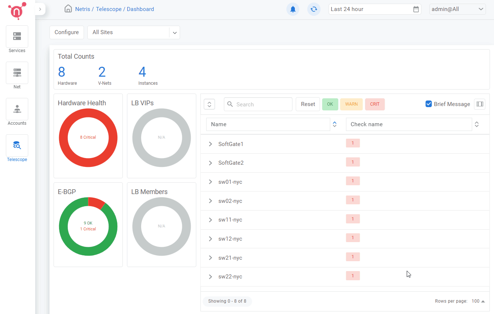
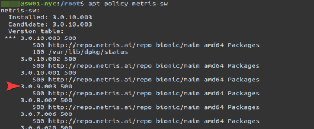
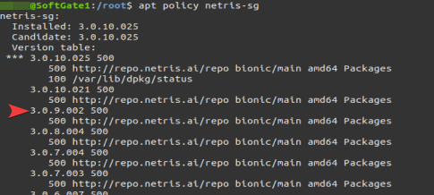

Netris Upgrade and Rollback Procedures¶
Upgrade Procedure¶
Due to potential database structural changes between Netris versions, it’s highly recommended to take a backup of the database before upgrading. The backup will be used in the unlikely event of the need to perform a rollback.
To create a database backup, run the following command on the Controller:
kubectl -n netris-controller exec -it netris-controller-mariadb-0 -- bash -c 'mysqldump -u $MARIADB_USER -p${MARIADB_PASSWORD} $MARIADB_DATABASE' > db-snapshot.sql
Ensure that SQL file db-snapshot.sql is generated in the current directory.
Stop all Netris agents on devices managed by the controller (switch & SoftGate).
For the switch agent:
sudo systemctl stop netris-sw
For the SoftGate agent:
sudo systemctl stop netris-sg
Ensure that all devices in the Net → Inventory section are “red” with the “check_agent” status being “Agent is unavailable”.
Note
A stopped Netris agent has no impact on production traffic through the device.
Before upgrading the Netris Controller, take a note of the “Netris Version” by navigating to Setting → General in the Controller web interface. This version number will be used in case of the need to perform a rollback procedure.
Start the upgrade using the one-liner.
curl -sfL https://get.netris.ai | sh -
Note
This process can take up to 5 minutes
Afterwards, make sure that all pods have either “Running” or “Completed” status by executing the following command:
kubectl -n netris-controller get pods
The output is similar to this:
NAME READY STATUS RESTARTS AGE
svclb-netris-controller-haproxy-6tkgj 4/4 Running 0 38d
netris-controller-haproxy-bcb944b7c-qcbf8 1/1 Running 0 13d
netris-controller-squid-7f6fdc6cf9-7fdx8 1/1 Running 0 38d
svclb-netris-controller-squid-58rnp 1/1 Running 0 38d
netris-controller-graphite-0 1/1 Running 0 38d
netris-controller-mongodb-0 1/1 Running 0 38d
netris-controller-redis-master-0 1/1 Running 0 38d
netris-controller-smtp-76778cf85f-lw5v5 1/1 Running 0 10d
netris-controller-mariadb-0 1/1 Running 0 10d
netris-controller-web-session-generator-8b9dbbcd8-8snhd 1/1 Running 0 10d
netris-controller-telescope-notifier-647975848f-fs5dn 1/1 Running 0 10d
netris-controller-app-b9b8d8f8d-4ssqb 1/1 Running 0 10d
netris-controller-grpc-987669fb9-jjskp 1/1 Running 0 10d
netris-controller-telescope-777c98c5d9-mqwl6 1/1 Running 0 10d
helm-install-netris-controller-lqmq7 0/1 Completed 0 20h
Then verify that the “Netris Version” reflects the version change by navigating to Setting → General in the Controller web interface.
Once you have verified that the Netris controller is up-to-date, take a note of the Netris version: for each device found under Net → Inventory section of the Controller web interface.
Afterwards, upgrade the switch & SoftGate agents using the one-liner from the “Install Agent” option of the corresponding device’s 3-dot menu found under the Net → Inventory section.
After all the agents have finished the upgrade, make sure all devices in the Net → Inventory section have a “green” status and the Netris version for each device reflects the version change.
In the event the “check_agent” status is “Agent is unavailable” after the agent upgrade has finished, perform agent restart on the affected device(s).
For the switch agent:
sudo systemctl restart netris-sw
For the SoftGate agent:
sudo systemctl restart netris-sg
Rollback Procedure¶
A rollback procedure can be carried out in case of any adverse impact on the production traffic after the Netris upgrade.
Stop all Netris agents on the devices managed by the controller (switch & SoftGate).
For the switch agent:
sudo systemctl stop netris-sw
For the SoftGate agent:
sudo systemctl stop netris-sg
Restore the database from the previously taken snapshot.
Copy the backup file from the controller host system to the MariaDB container:
kubectl -n netris-controller cp db-snapshot.sql netris-controller-mariadb-0:/opt/db-snapshot.sql
Restore the database:
kubectl -n netris-controller exec -it netris-controller-mariadb-0 -- bash -c 'mysql -u root -p${MARIADB_ROOT_PASSWORD} $MARIADB_DATABASE < /opt/db-snapshot.sql'
Downgrade Netris controller application.
Note
For the version number, use the number collected from step #3 during the upgrade procedure.
Example:
curl -sfL https://get.netris.ai | sh -s -- --ctl-version 3.0.9-014
Afterwards, verify that the version of the “Netris Version” reflects the downgraded version by navigating to Setting → General in the Netris Controller.
Determine the correct version number to downgrade the device agents to:
For the switch agent, use apt policy netris-sw and select the latest version that matches the Controller version.
Example:
For the SoftGate agent, use apt policy netris-sg and select the latest version that matches the Controller version.
Example:
Downgrade switch and SoftGate agents.
For the switch agent follow the below example, replacing the version number determined in the pervious step #4.
Example:
sudo apt-get update && apt-get install netris-sw=3.0.9.003
For the SoftGate agent follow the below example, replacing the version number determined in the pervious step #4.
Example:
sudo apt-get update && apt-get install netris-sg=3.0.9.002
After all the switches and SoftGates have been downgraded, make sure all the devices in the Net → Inventory section have a “green” status and the Netris version for each device matches what was determined in step #4.
In case the “check_agent” status is “Agent is unavailable” after agent downgrade, perform agent restart.
For the switch agent:
sudo systemctl restart netris-sw
For the SoftGate agent:
sudo systemctl restart netris-sg